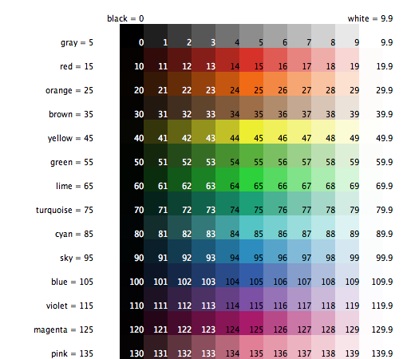

So far you’ve successfully navigated your way through opening and running models, pressing buttons, changing sliders and switches, and gathering information from a model using plots and monitors.
In this section, the focus will start to shift from observing models to manipulating models. You will start to see the inner workings of the models and be able to change how they look.
- Open the Models Library (from the File menu).
- Open Traffic Basic, found in the “Social Science” section.
- Run the model for a while to get a feel for it.
- Consult the Info tab for any questions you may have.
In this model, you will notice one red car in a stream of blue cars. The stream of cars are all moving in the same direction. Every so often they “pile up” and stop moving. This is modeling how traffic jams can form without a specific cause like an accident.
You may alter the settings and observe a few runs to get a fuller understanding of the model.
As you are using the Traffic Basic model, have you noticed any additions you would like to make to the model?
Looking at the Traffic Basic model, you may notice the environment is fairly simple; a black background with a white street and number of blue cars and one red car. Changes that could be made to the model include: changing the color and shape of the cars, adding a house or street light, creating a stop light, or even creating another lane of traffic. Some of these suggested changes are visual, to enhance the look of the model, while others are more behavioral. We will be focusing more on the simpler or cosmetic changes throughout most of this tutorial. (Tutorial #3 will go into greater detail about behavioral changes, which require changing the Code tab.)
To make these simple changes we will be using the Command Center.
The Command Center is found in the Interface tab. It allows you to enter commands or directions to a model. Commands are instructions you can give to NetLogo’s agents: turtles, patches, links, and the observer.
In Traffic Basic:
- Press the “setup” button.
- Locate the Command Center.
- Click the mouse in the white box at the bottom of the Command Center.
- Type the text shown here:
- Press the return key.
What happened to the View?
You may have noticed the background of the View has turned all yellow and the street has disappeared.
Why didn’t the cars turn yellow too?
Looking back at the command that was written, we asked only the patches to change their color. In this model, the cars are represented by a different kind of agent, called “turtles”. Therefore, the cars did not receive these instructions and thus did not change.
What happened in the Command Center?
You may have noticed that the command you just typed is now displayed in the Command Center as shown below:
- Type in the bottom of the Command Center the text shown below:
Was the result what you expected?
The view should have a yellow background with a line of brown cars in the middle:
The NetLogo world is a two dimensional world that is made up of turtles, patches, links, and an observer. The patches are the ground over which the turtles move. Links are connections between turtles. And the observer is a being that oversees everything that is going on. (For more specifics, refer to the NetLogo Programming Guide.)
In the Command Center you can give commands to any of these types of agents. You choose which type to talk to by using the popup menu located in the bottom left corner. You can also use the tab key on your keyboard to cycle through the different types.
- In the Command Center, click on the “observer>” in the bottom left corner:
- Choose “turtles” from the popup menu.
- Type
set color pinkand press return.- Press the tab key until you see “patches>” in the bottom left corner.
- Type
set pcolor whiteand press return.What does the View look like now?
Do you notice any differences between these two commands and the observer commands from earlier?
The observer oversees the world and therefore can give a command to the patches
or turtles using ask. Like in the first example (observer>
ask patches [set pcolor yellow]), the observer has to ask the patches to set
their pcolor to yellow. But when a command is directly given to a group of
agents like in the second example (patches> set pcolor white), you only have
to give the command itself.
- Press “setup”.
What happened?
Why did the View revert back to the old version, with the black background and white road? Upon pressing the “setup” button, the model will reconfigure itself back to the settings outlined in the Code tab. The Command Center doesn’t permanently change the model. It allows you to manipulate the NetLogo world directly to further answer those “What if” questions that pop up as you are investigating the models. (The Code tab is explained in the next tutorial, and in the Programming Guide.)
Now that we have familiarized ourselves with the Command Center, let’s look at some more details about how colors work in NetLogo.
You may have noticed in the previous section that we used two different words
for changing color: color and pcolor.
What is the difference between color and pcolor?
- Choose “turtles” from the popup menu in the Command Center (or use the tab key).
- Type
set color blueand press return.What happened to the cars?
Think about what you did to make the cars turn blue, and try to make the patches turn red.
If you try to ask the patches to
set color red, an error message occurs:
- Type
set pcolor redinstead and press return.
We call color and pcolor “variables”. Some commands and variables are
specific to turtles and some are specific to patches. For example, the color
variable is a turtle variable, while the pcolor variable is a patch
variable.
Go ahead and practice altering the colors of the turtles and patches using the
set command and these two variables.
To be able to make more changes to the colors of turtles and patches, or shall we say cars and backgrounds, we need to gain a little insight into how NetLogo deals with colors.
In NetLogo, colors have a numeric value. In all of the exercises we have been using the name of the color. This is because NetLogo recognizes 16 different color names. This does not mean that NetLogo only recognizes 16 colors. There are many shades in between these colors that can be used too. Here’s a chart that shows the whole NetLogo color space: 
To get an intermediate shade, you refer to it by a number instead, or by adding
or subtracting a number from a name. For example, when you type
set color red, this does the same thing as if you had typed set color 15.
And you can get a lighter or darker version of the same color by using a number
that is a little larger or a little smaller, as follows.
- Choose “patches” from the popup menu in the Command Center (or use the tab key).
- Type
set pcolor red - 2(The spacing around the “-” is important.)By subtracting from red, you make it darker.
- Type
set pcolor red + 2By adding to red, you make it lighter.
You can use this technique on any of the colors listed in the chart.
In the previous activity, we used the set command to change the colors of all
the cars. But if you recall, the original model contained one red car amongst a
group of blue cars. Let’s look at how to change only one car’s color.
- Press “setup” to get the red car to reappear.
- Right-click on the red car.
- If there is another turtle close to the red turtle you’ll see more than one turtle listed at the bottom of the menu. Move your mouse over the turtle selections, notice when your mouse highlights a turtle menu item that turtle is highlighted in the view. Select “inspect turtle” from the sub-menu for the red turtle.
A turtle monitor for that car will appear:
The mini-view at the top of the agent monitor will always stay centered on this agent. You can zoom the view in and out using the slider below the view and you can watch this turtle in the main view by pressing the “watch-me” button.
Taking a closer look at this turtle monitor, we can see all of the variables that belong to the red car. A variable is a location that holds a value.
Let’s take a closer look at the turtle monitor:
What is this turtle’s who number?
What color is this turtle?
What shape is this turtle?
This turtle monitor is showing a turtle who that has a who number of 0, a color of 15 (red – see chart above), and the shape of a car.
There are two other ways to open a turtle monitor besides right-clicking. One
way is to choose “Turtle Monitor” from the Tools menu, then type the who number
of the turtle you want to inspect into the “who” field and press return. The
other way is to type inspect turtle 0 (or other who number) into the
Command Center.
You close a turtle monitor by clicking the close box in the upper left hand corner (Mac) or upper right hand corner (other operating systems).
Now that we know more about Agent Monitors, we have three ways to change an individual turtle’s color.
One way is to use the box called an Agent Commander found at the bottom of an Agent Monitor. You type commands here, just like in the Command Center, but the commands you type here are only done by this particular turtle.
- In the Agent Commander of the Turtle Monitor for turtle 0, type
set color pink.What happens in the View?
Did anything change in the Turtle Monitor?
A second way to change one turtle’s color is to go directly to the color variable in the Turtle Monitor and change the value.
- Select the text to the right of “color” in the Turtle Monitor.
- Type in a new color such as
green + 2.What happened?
The third way to change an individual turtle’s or patch’s color is to use the observer. Since, the observer oversees the NetLogo world, it can give commands that affect individual turtles, as well as groups of turtles.
- In the Command Center, select “observer” from the popup menu (or use the tab key).
- Type
ask turtle 0 [set color blue]and press return.What happens?
Just as there are Turtle Monitors, there are also Patch Monitors, which work very similarly.
Can you make a patch monitor and use it to change the color of a single patch?
If you try to have the observer ask patch 0 [set pcolor blue], you’ll get an
error message:
To ask an individual turtle to do something, we use its who number. But patches don’t have who numbers, therefore we need to refer to them some other way.
Remember, patches are arranged on a coordinate system. Two numbers are needed to plot a point on a graph: an x-axis value and a y-axis value. Patch locations are designated in the same way as plotting a point.
- Open a patch monitor for any patch.
The monitor shows that for the patch in the picture, its pxcor variable is -19 and its pycor variable is 0. If we go back to the analogy of the coordinate plane and wanted to plot this point, the point would be found on the x axis left of the origin, where x=-19 and y=0.
To tell this particular patch to change color:
- In the bottom of the patch monitor, enter
set pcolor blueand press return.Typing a command in a turtle or patch monitor addresses only that turtle or patch.
You can also talk to a single patch from the Command Center:
- In the Command Center, enter
ask patch -19 0 [set pcolor green]and press return.
At this point, you may want to take some time to try out the techniques you’ve learned on some of the other models in the Models Library.
In Tutorial #3: Procedures you can learn how to alter and extend existing models and build your own models.